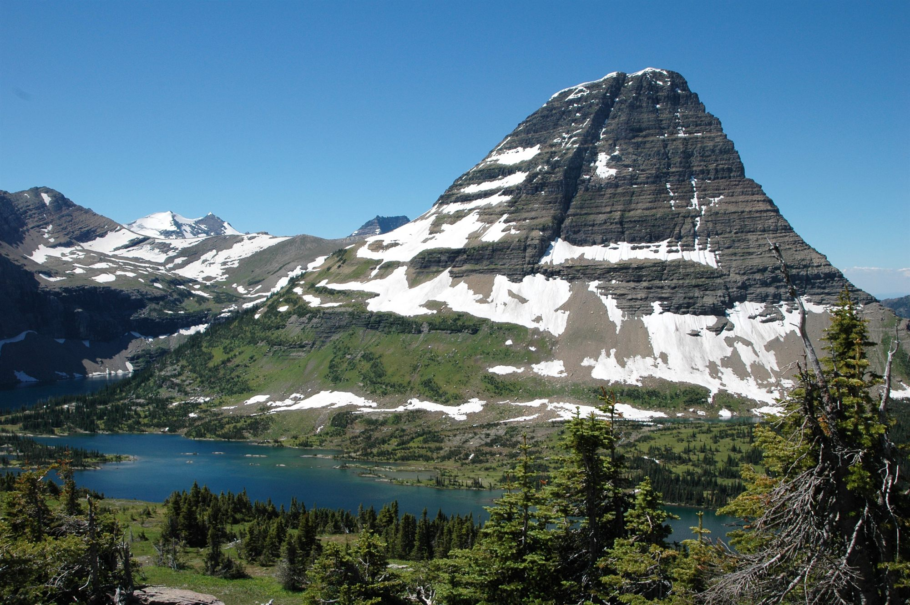
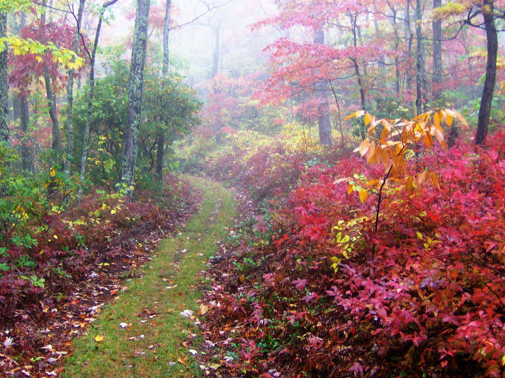
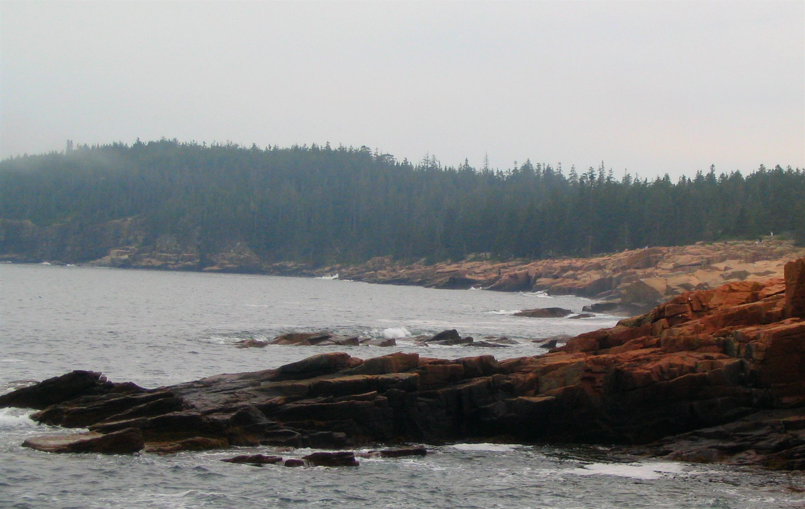
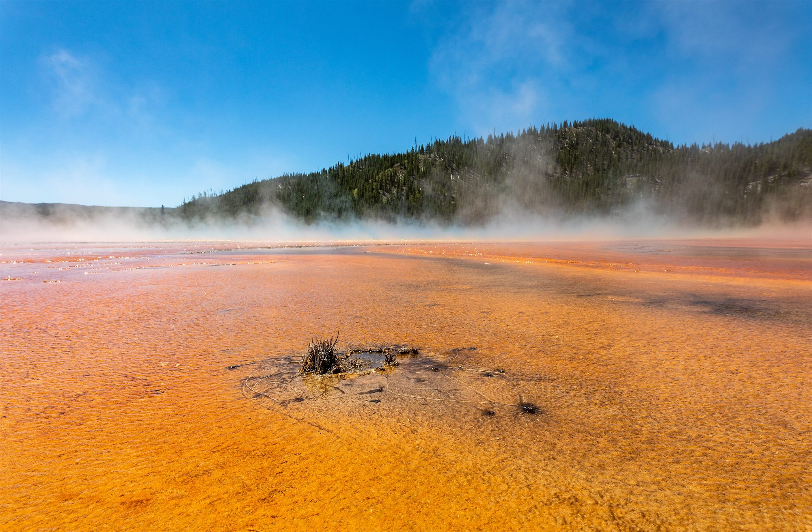
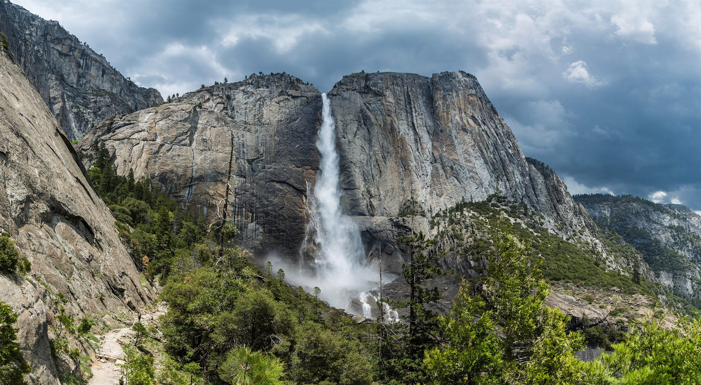
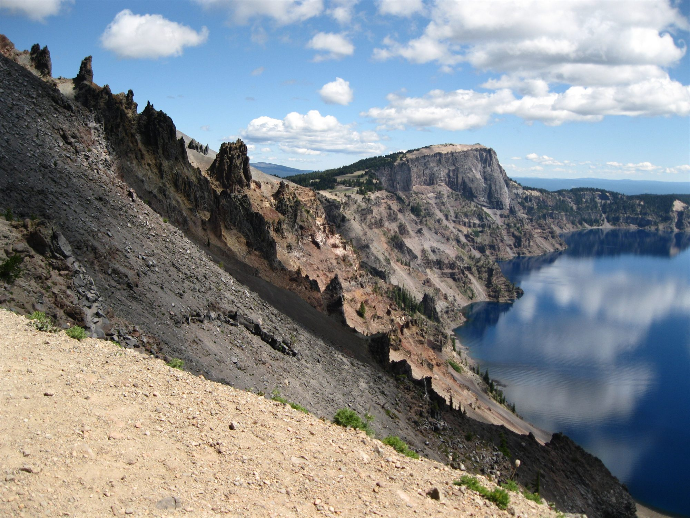
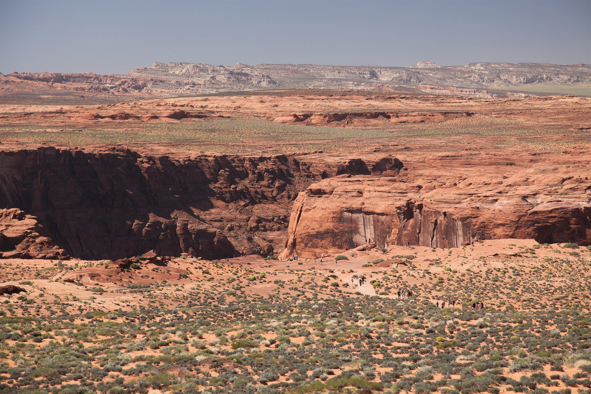
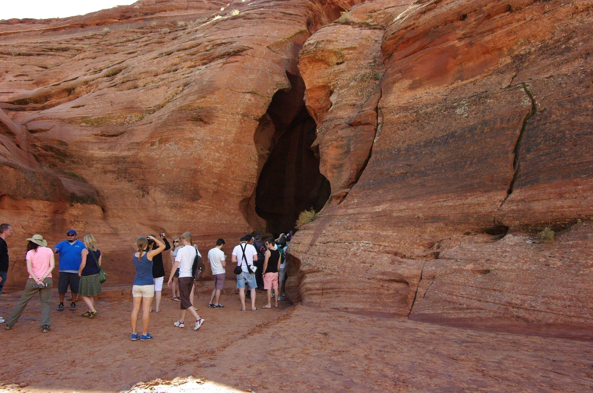
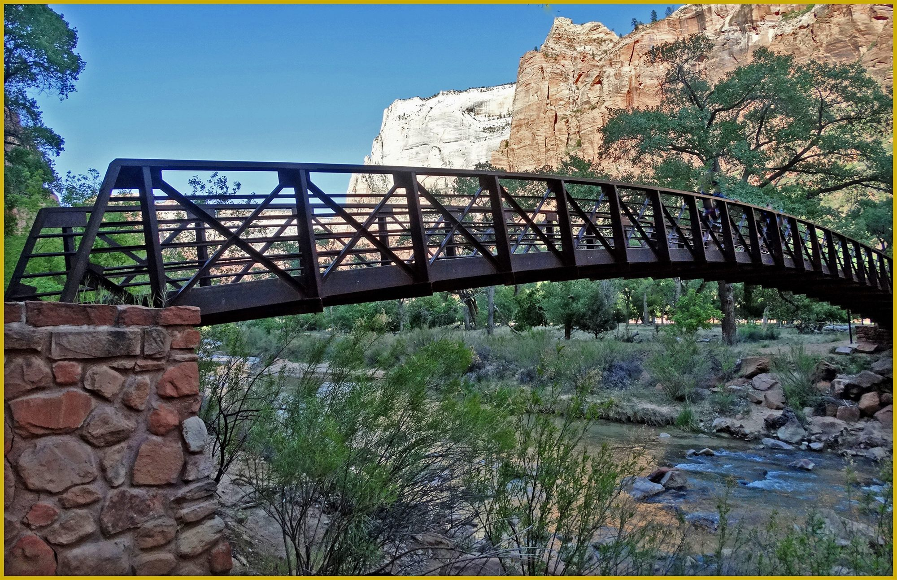
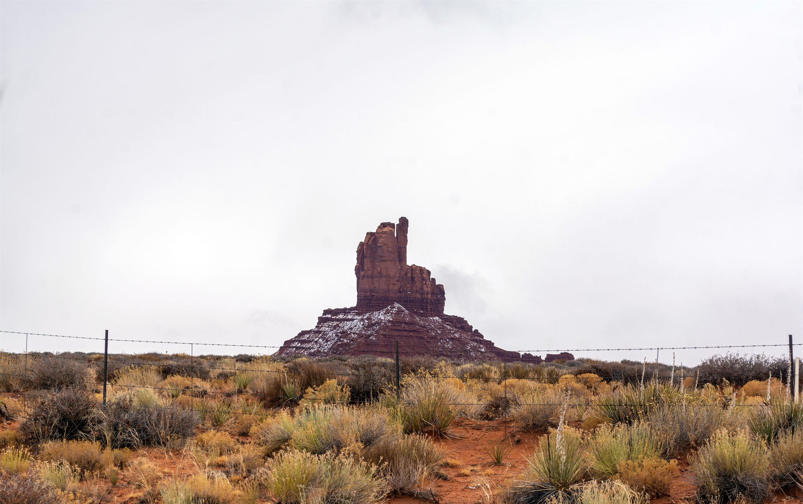

Тихоокеанский берег и Скалистые горы
Запад
Ледники спускаются к океану, каньоны прорезают пустыню, а дорога вдоль побережья входит в списки лучших в мире.
Смотреть местаПутеводитель по США · 2026
50 штатов, 63 национальных парка и тысячи километров между ними. Горы, реки и озёра — места, которые стоит увидеть, и конструктор маршрута, который соберёт поездку за вас.
Америка начинается не с городов, а с расстояний между ними. С пустыни, где дорога уходит за горизонт, с неона на заправке, с радио, которое меняется вместе со штатом.
Мы собрали четыре региона, двенадцать природных точек и карту, на которой маршрут собирается в два клика. Выбирайте свои места — остальное сделает дорога.
Начать с регионовНажмите на регион, чтобы открыть
От Тихого океана до Атлантики — четыре разных ритма, воды и пейзажа. Выберите свой: океан, озёра, прерии или небоскрёбы.

Ледники спускаются к океану, каньоны прорезают пустыню, а дорога вдоль побережья входит в списки лучших в мире.
Смотреть места
Медленный ритм Нового Орлеана, ар-деко Майами и пряная кухня, которую ни с чем не спутать. Здесь вечер начинается днём.
Смотреть местаПоля до горизонта, архитектура Чикаго и озеро, которое больше похоже на море. Самая спокойная и самая недооценённая Америка.
Смотреть места
Нью-Йорк, Бостон и осень Новой Англии. Кирпичные кварталы, университеты и океан в двух шагах — самая европейская часть страны.
Смотреть местаМаксимум 6 остановок
Нажмите на точку на карте — мы посчитаем дни и соберём основу поездки. Остановки можно менять в любом порядке.
0 остановок · 0 дней
Максимум 6 остановок. Нажмите на точку, чтобы добавить.
Без спама. Только маршрут и полезные ссылки.
Нажмите на карточку — точка появится на карте
Восемь открыток, которые стоит увидеть вживую. Каждая — отдельная история о стране и её расстояниях.
Аризона · 1,8 млрд лет истории в слоях камня

02 ИсточникиВайоминг · первый национальный парк мира

03 ВодопадКалифорния · 739 метров падения воды
Мичиган · 82 100 км² пресной воды

05 ОзероОрегон · самое глубокое озеро США

06 РекаАризона · Колорадо в скальном кольце

07 КаньонАризона · свет падает сверху, а не сбоку

08 РекаЮта · каньон, выточенный водой
1776 — 2008
Короткая хронология страны: от подписания Декларации до первого шага на Луне.
Тринадцать колоний объявляют о создании нового государства.
Отмена рабства закреплена в Конституции после Гражданской войны.
Братья Райт поднимают самолёт в воздух на 12 секунд, изменивших мир.
Нил Армстронг делает первый шаг по поверхности Луны.
Барак Обама становится первым темнокожим президентом США.
Америка экспортирует не пейзажи, а истории. Кино, музыка, спорт и еда — четыре способа узнать страну ещё до поездки.
Голливуд с 1910-х задаёт мировые стандарты — от нуара до блокбастеров.
Джаз, блюз, рок-н-ролл и хип-хоп родились здесь и разошлись по планете.
NFL, NBA, MLB и NHL: один Супербоул собирает больше 100 млн зрителей.
Бургеры, BBQ, food trucks и сотни региональных кухонь — от Техаса до Вермонта.

Соберите маршрут из точек на карте или начните с готового варианта на восемь дней. Остальное — вопрос дороги.
50 штатов · 63 парка · одна дорога